このダッシュボードは、Sentinel-1衛星のSARレーダー波形をリアルタイムに解析し、タンクの液面変化を監視する実験的なプロジェクトです。以下のチャートとAIレポートは、最新の観測データとGoogle検索からの情報を組み合わせて生成されたものです。
OSSプロジェクトのGitHubリポジトリ: https://github.com/rohiniku/s1-tank-monitor
※本レポートは、宇宙からのレーダー波形を自律的に読み解いたAIが、今朝のGoogle検索ニュースとリアルタイムに結合して自動生成した実験用ファクトチェック報告です。
・志布志基地では、2026年4月以降、VV偏波が過去の平均的なベースライン（約0dB〜-0.4dB）と比較して著しく高い水準（直近で2.415dB）で推移しており、タンク屋根の継続的な上昇、すなわち在庫の増加を示唆している。 ・志布志におけるVV偏波の持続的な高値は、過去に例のない在庫増加トレンドを示しており、今後の動向を継続的に監視する必要がある。
・志布志基地では2026年4月以降、VV/VH偏波が継続的に上昇し、10月20日にはデータ期間中の最高値に近い2.415を記録している。これは、同基地で原油在庫が大幅かつ持続的に増加（満タン方向）している物理的兆候である。 ・2026年3月と5月に国家備蓄原油の緊急放出が実施されたが、志布志のSARデータは同時期から一貫して在庫増加を示しており、放出後の積極的な備蓄補充、またはホルムズ海峡を迂回したタンカーによる原油輸入の多角化が進行している可能性が高い。 ・志布志の異常な在庫増加トレンドは、中東情勢の緊迫化に伴う供給網強靭化の一環として、特定の基地で集中的な備蓄再構築が進められている可能性を示唆しており、今後の備蓄政策や輸入動向に最大の警戒が必要である。
・志布志基地では2026年4月以降、VV/VH偏波が過去平均を大幅に上回る水準で持続的に上昇しており、原油在庫が顕著に増加している異常なトレンドを示している。他の主要基地は季節性ノイズからの回復や安全水域を維持している。 ・中東情勢は極めて緊迫し、ホルムズ海峡での船舶攻撃や供給途絶リスクが高まり、原油価格は高騰している。日本は中東原油への依存度が高く、エネルギー白書も脆弱性を指摘する中、志布志での在庫増加は、地政学リスクの高まりに対する積極的な備蓄強化、または供給網混乱への事前対応を示唆する。 ・ホルムズ海峡の完全封鎖リスクは依然として高く、米国とイラン間の軍事衝突激化の可能性も排除できない。志布志の在庫増加は一時的な緩衝材に過ぎず、中東情勢のさらなる悪化は日本のエネルギー安全保障に壊滅的な影響を及ぼす。
📊 最新の幾何アライメント済・移動平均観測チャート
（※画像上でダブルタップまたはピンチアウトすることで、ブラウザ標準の滑らかなズーム操作が可能です）
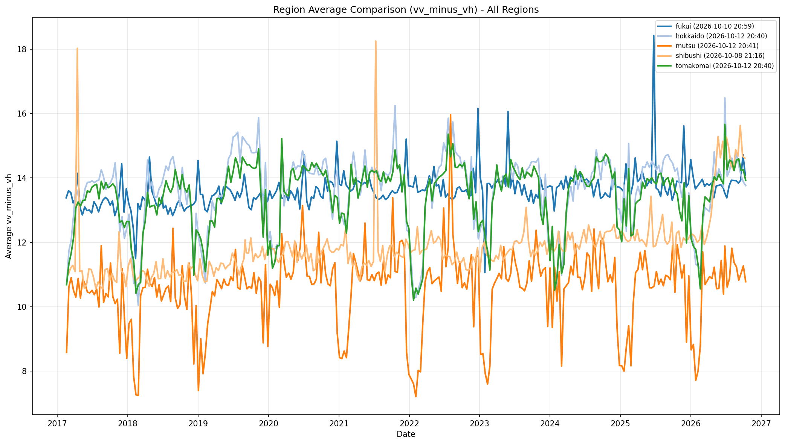
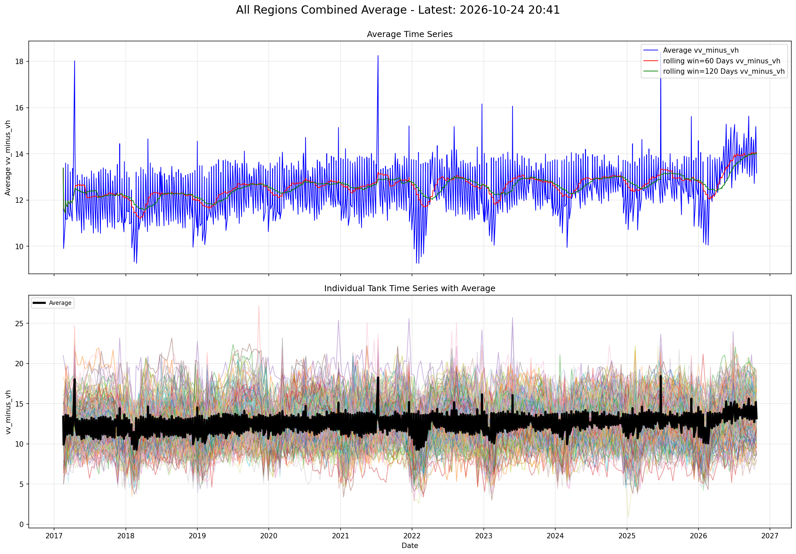
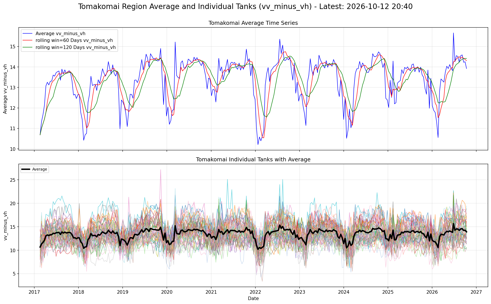
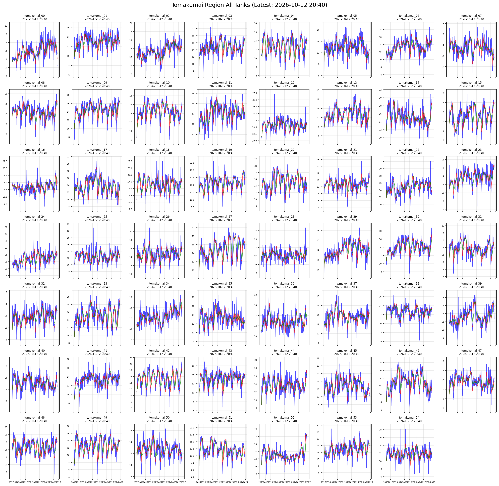
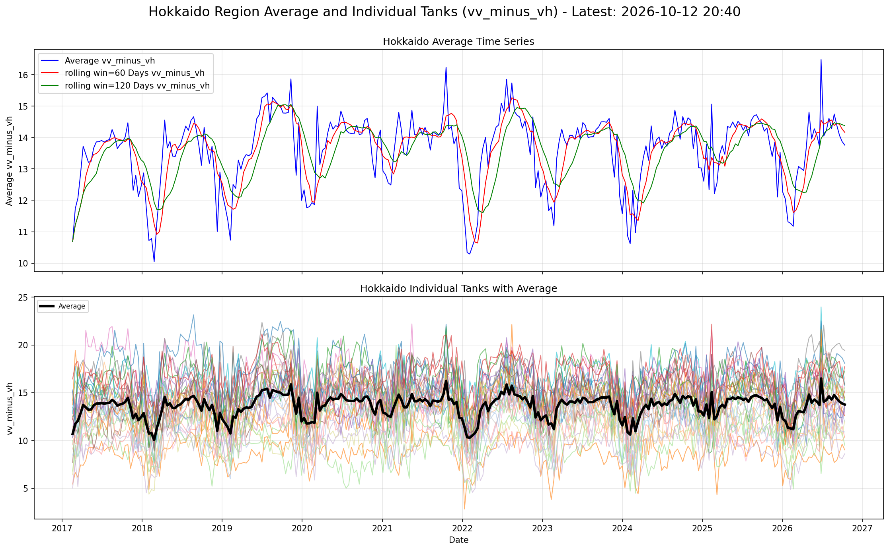
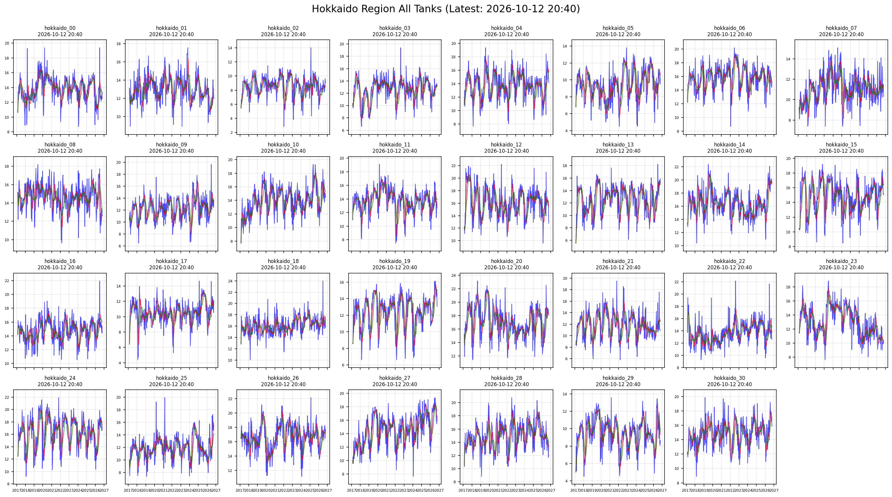
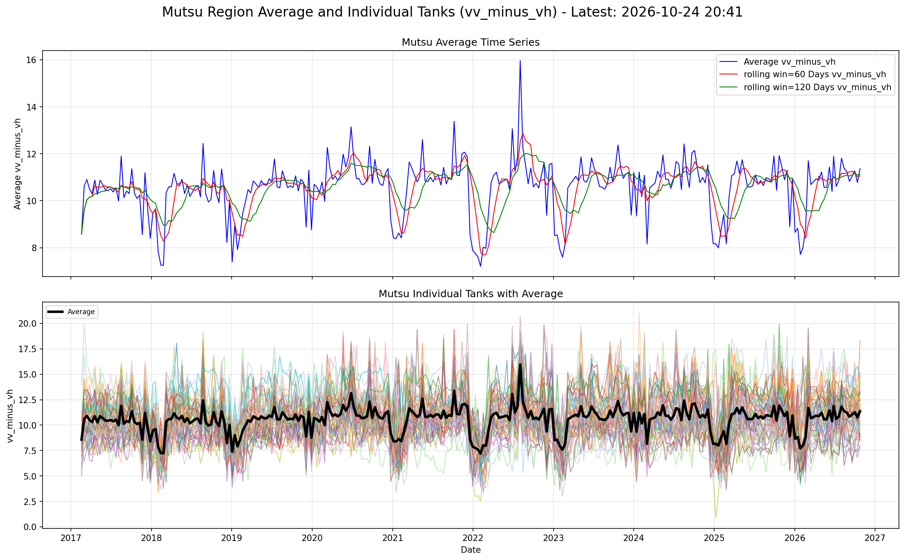
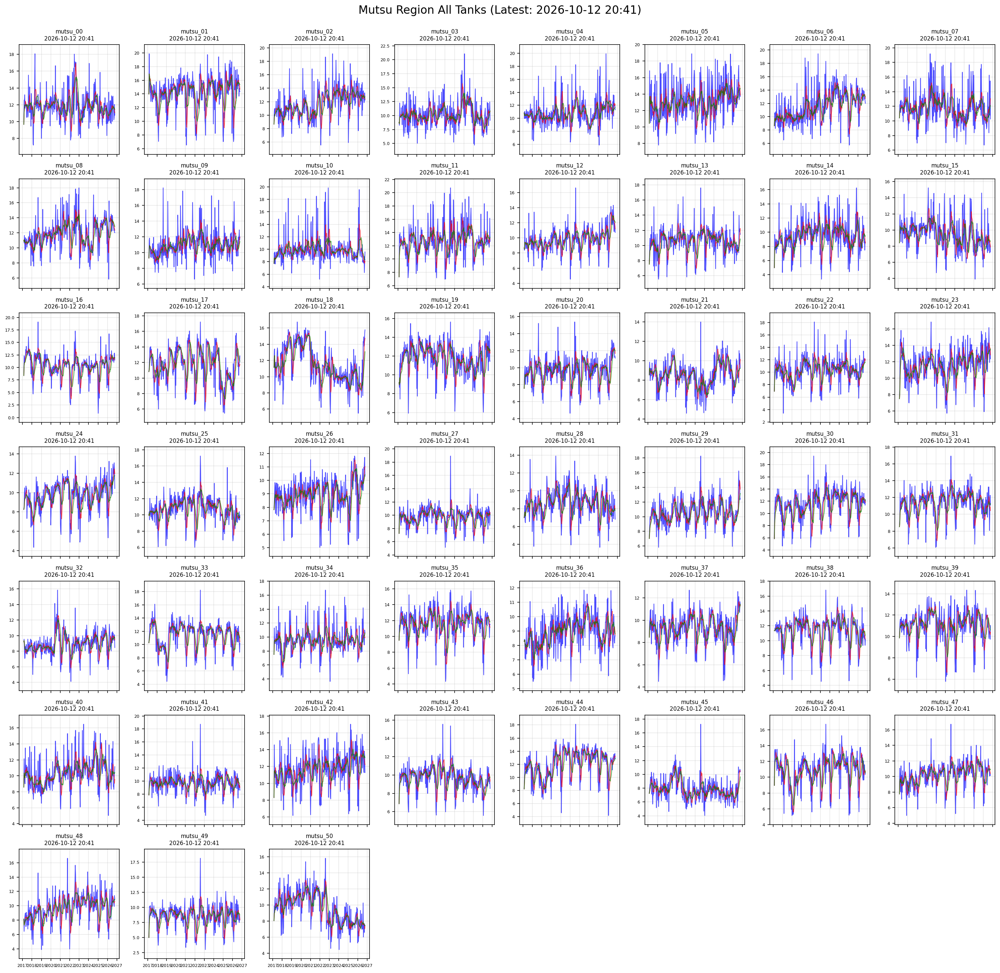
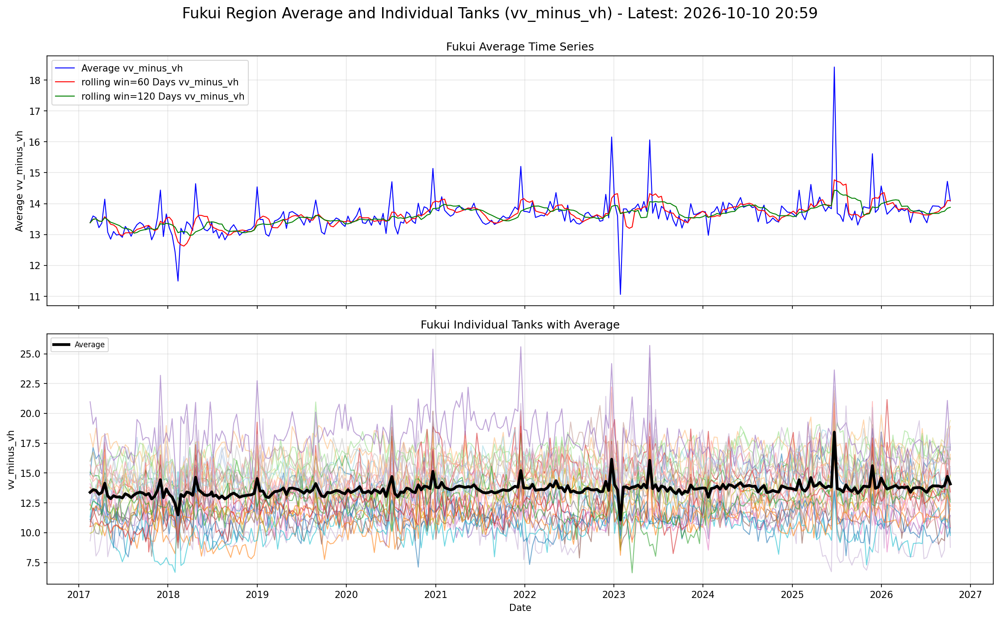
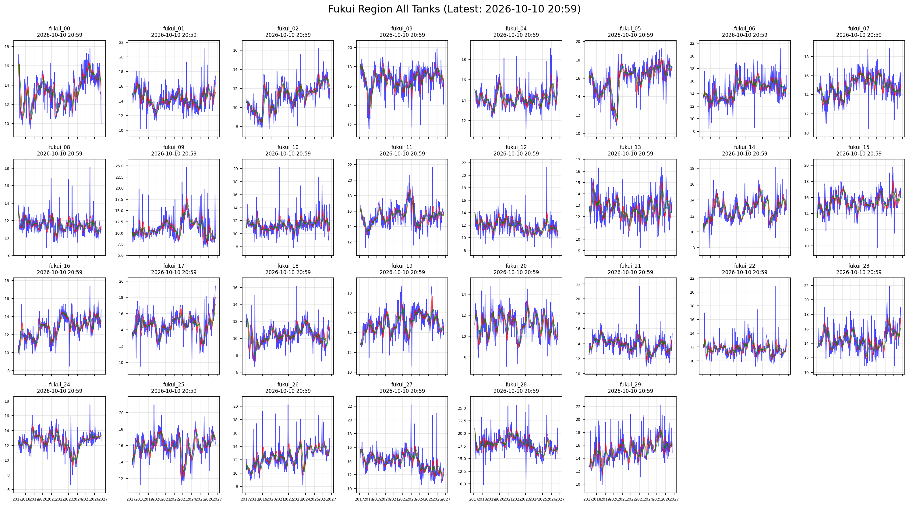
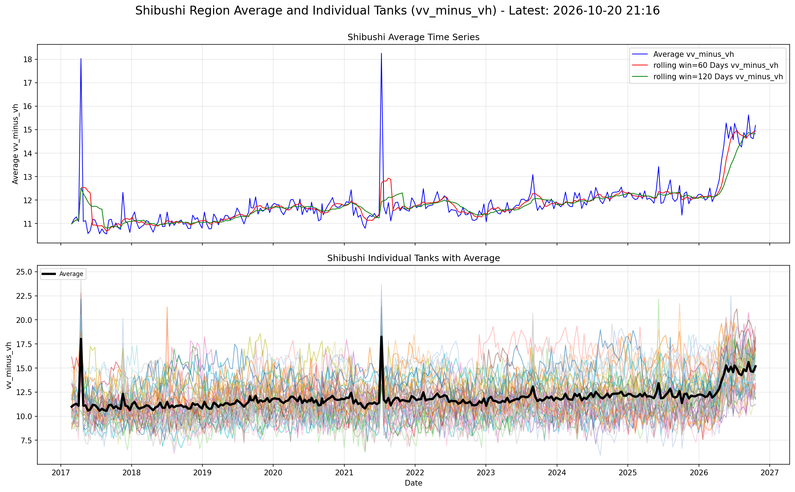
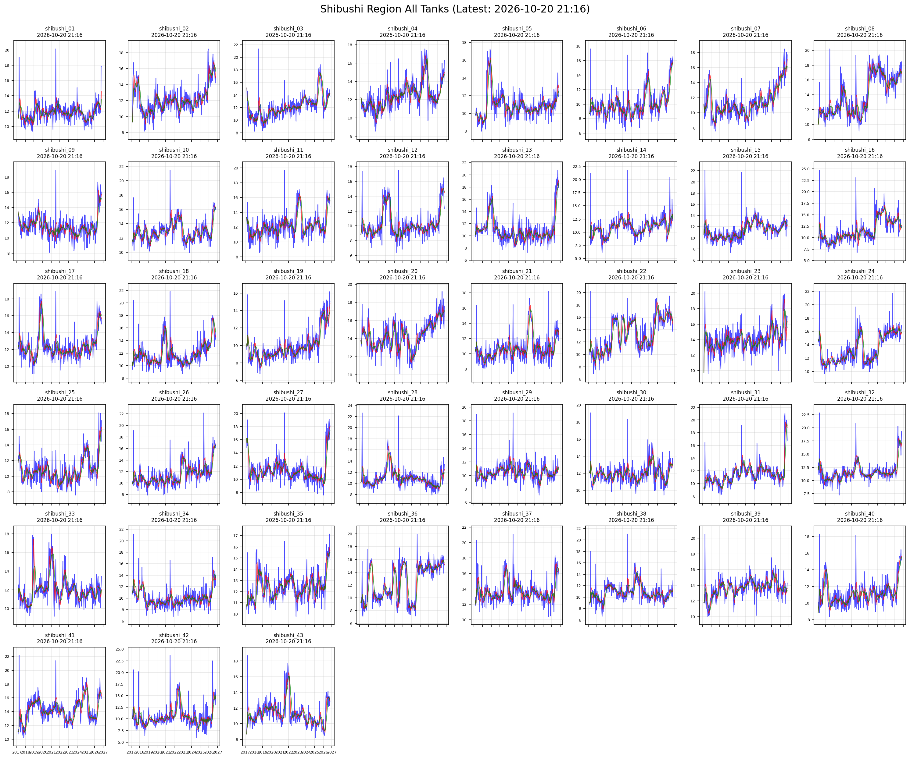